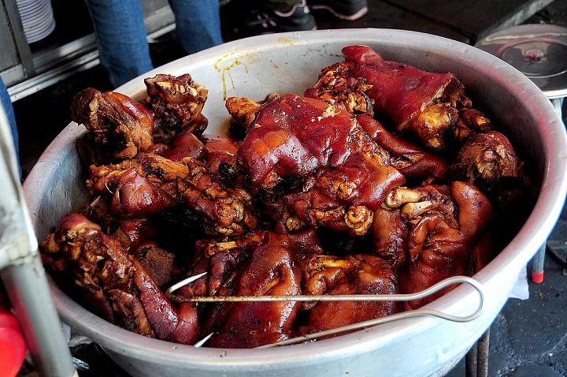
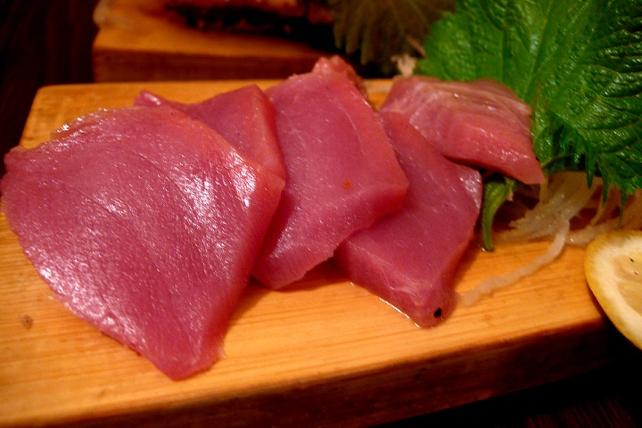

About
Booking
ToDo
Pingtung
Food:
萬巒豬腳(Wanluan Pig's knuckle)

The pigskin is really chewy and really flavory, you can eat it with their special sauce. And remember, it is not a restaurant, there are lots of reataurants in Pingtung.
東港黑鮪魚(Bluefin Tuna)

There are lots of cheap and delicious food in Taiwan, but if you want something crazy, here comes the best fish meat in the world, but I'm too poor to eat it, so you can have a try.
Attractions:
墾丁(Kenting)
The most popular beach in taiwan, almost every Taiwanese have come here before, there are also lots of beautiful views.
小琉球(Xiao Liuqiu)
It is a little island beside Pingtung, you can take a ship there. At there, you can snorkling and see some beautiful creatures.
Transport:
Taoyuan Airport →→ Normal Bus →→ Taiwan High Speed Rail →→ Kaohsiung station →→ Bus →→ Pingtung
Picture Copyright:
屏東圖片提供:wiki / 萬巒豬腳圖片提供:wiki / 黑鮪魚圖片提供:wiki / 墾丁圖片提供:wiki / 小琉球圖片提供:Kkday部落格